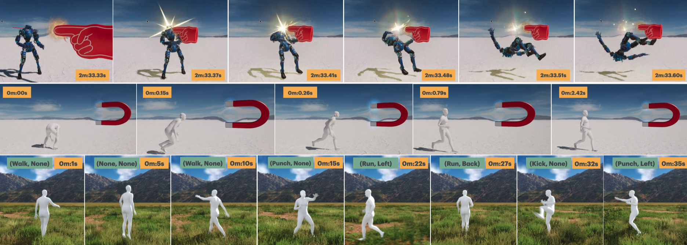

Yan Zhang1, Yao Feng1,3, Alpár Cseke1, Nitin Saini1, Nathan Bajandas1, Nicolas Heron1, Michael J. Black2
1 Meshcapade, 2 Max Planck Institute for Intelligent Systems, Tübingen, 3 Stanford University
To build a motor system of the interactive avatar, it is essential to develop a generative motion model that drives the body to move through 3D space in a perpetual, realistic, controllable, and responsive manner. Although motion generation has been extensively studied, most methods do not support "embodied intelligence" due to their offline setting, slow speed, limited motion lengths, or unnatural movements. To overcome these limitations, we propose PRIMAL, an autoregressive diffusion model that is learned with a two-stage paradigm, inspired by recent advances in foundation models. In the pretraining stage, the model learns motion dynamics from a large number of sub-second motion segments, providing "motor primitives" from which more complex motions are built. In the adaptation phase, we employ a ControlNet-like adaptor to fine-tune the motor control for semantic action generation and spatial target reaching. Experiments show that physics effects emerge from our training. Given a single-frame initial state, our model not only generates unbounded, realistic, and controllable motion, but also enables the avatar to be responsive to induced impulses in real time. In addition, we can effectively and efficiently adapt our base model to few-shot personalized actions and the task of spatial control. Evaluations show that our proposed method outperforms state-of-the-art baselines. We leverage the model to create a real-time character animation system in Unreal Engine that is highly responsive and natural.
PRIMAL supports few-shot action personalization. Provided a few seconds of videos, we can fine-tune the base model with the mocapaded results. The motion realism and responsiveness are kepted, and the avatar motion style is personalized. In this demo, we retarget the generated motion to Unitree G1 character in Unreal.
Walk
Run
→
Poke while limping
The key novelty is the formulation that generates 0.5-second motion given a single initial state. This contrasts with prior work that generates a long future motion conditioned on a past motion. Its benefits include reducing overfitting, making model training easier, and making the avatar reactive to impulses and classifier-based guidance.
To better understand the benefits of our formulation, we compare two identical settings except the motion length, where ours generates 15 frames given 1 frame, and baseline generates 40 frames given 20 frames. We replace in-context with cross-attention to handle multi-frame conditioning. Both models are successfully overfit to a ballet sequence with 229 frames, and the ballet motion can be reproduced given the first frame(s).
Ballet motion for training.
ours given the first frame.
baseline given the first 20 frames.
First, we generate 780 future frames given the end frame(s) of that ballet sequence, and use ASR to measure the foot-skating ratio. We find ours produces ballet stably, whereas baseline gradually fails as time progresses.
ours, ASR=0.08.
baseline, ASR=0.12.
Second, we generate 156 frames, with conditions from another walking sequence. We find ours produces fast and natural transitions to ballet, whereas baseline produces severe artifacts.
ours, ASR=0.06.
baseline, ASR=0.3.
These results indicate our setting makes the model more generalizable w.r.t. motion length and semantics.
@article{zhang2025primal,
title={PRIMAL: Physically Reactive and Interactive Motor Model for Avatar Learning},
author={Zhang, Yan and Feng, Yao and Cseke, Alp{\'a}r and Saini, Nitin and Bajandas, Nathan and Heron, Nicolas and Black, Michael J},
journal={ICCV},
year={2025}
}